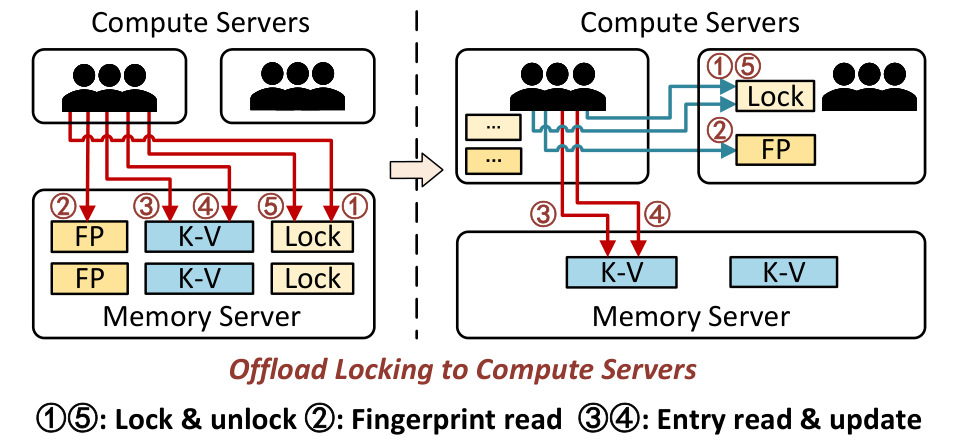
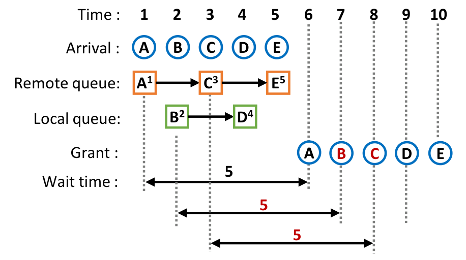
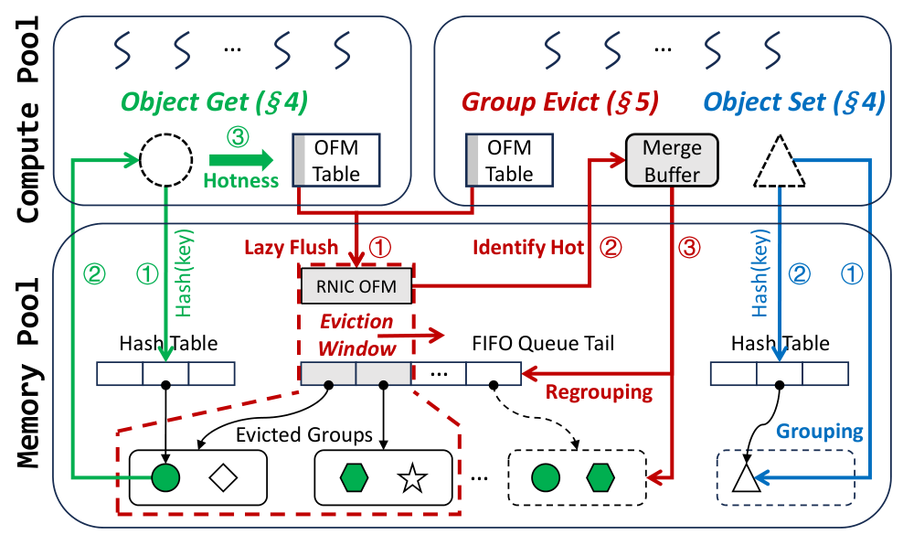
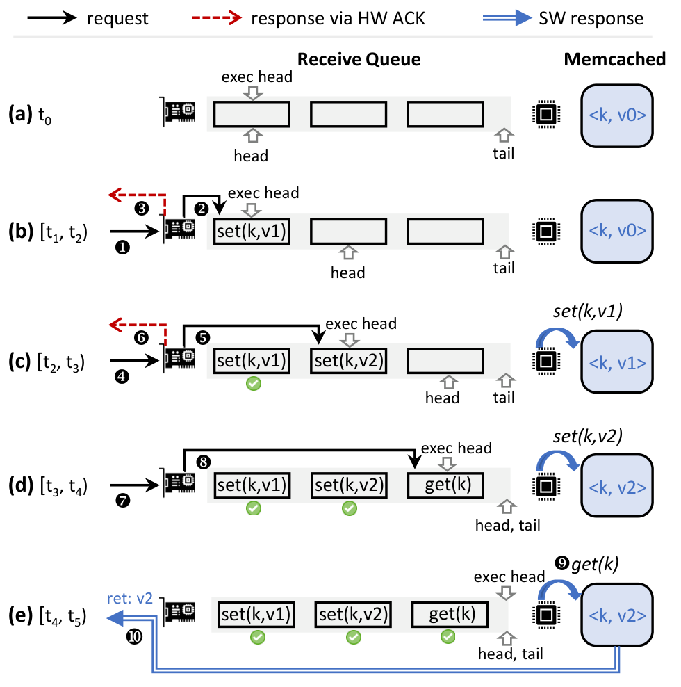
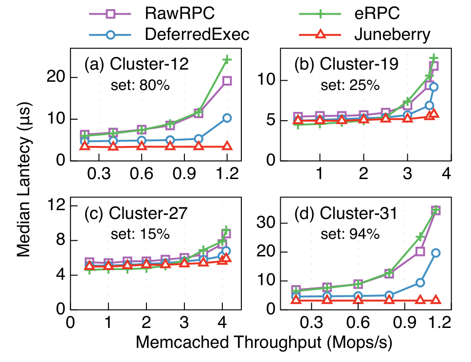
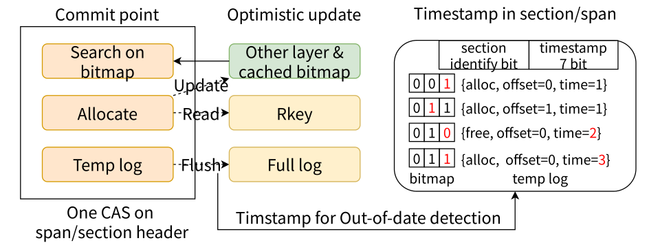

把指纹与叶锁移到计算侧，降低内存节点的操作数压力。 远端树索引既要点查又要扫描。把叶节点做连续有利于扫描，但精确定位和加锁会增加小RDMA请求。所有计算节点的请求汇聚在少量内存节点时，可能先耗尽的是内存RNIC IOPS，而不是链路带宽。
机制拆解 HOW IT WORKS 叶数据连续，定位信息分散 远端保留FP-B+-tree及连续叶节点。计算节点私有缓存底层内部节点，并在本地构建更高层；每个叶指纹表有一个计算侧primary，其他计算节点可缓存副本。指纹只帮助定位，不能替代最终key比较。
查缓存指纹，再直接读目标KV 点查先用本地内部树定位叶与指纹表，匹配指纹后只取目标KV。如果没有指纹或取回key不匹配，必须读primary指纹并更新缓存，不能把过期缓存里的“没有”直接当成数据库不存在。
版本处理结构变化，CRC处理读写交错 叶范围改变（split/merge）时更新版本；内部条目、指纹表和KV条目携带关联版本，发现不匹配就失效本地项并重新远端遍历。较大读取单元再用CRC发现读写交错。版本、完整性校验和写锁分别解决不同问题，不能合成一句“缓存一致性已解决”。
锁与primary指纹放在同一计算侧位置 更新先锁计算侧叶锁，读取指纹、读KV、写KV、再解锁。基础路径中5个打到内存节点的RDMA，有3个（加锁、指纹读取、解锁）转移到计算节点之间；总操作数未必减少，但瓶颈RNIC负担下降。插入需要写指纹时，还把末尾锁字段的释放合入同一次写。
成员变化需要重建权威位置 指纹primary通过一致性哈希确定，失败节点移出成员表后可选新primary并基于远端KV校验重建。缓存副本可能滞后，不能不经校验就直接晋升并恢复写入；论文的机制讨论不等于完整高可用服务验证。
关键实验 WHAT THE DATA SAYS 相对dLSM，插入吞吐约2.1–5.7×；不是相对所有基线的统一范围。
条件 6CN+1MN；100GbE ConnectX-6；预载10亿KV，每项32B（24B key/8B value），每轮1亿操作；含均匀及Zipf分布。 基线 该倍数专指dLSM；论文另外对比Sherman、ROLEX、SMART、CHIME。 应按具体操作和分布看图12–14；范围扫描面对的是连续数据带宽，不能用插入结果估计扫描收益。
消融：协作缓存使search/write提高约1.2–1.9×，协作并发机制使insert/update再提高约1.5–1.6×。
条件 图16，同一FP-B+-tree逐项启用优化；图17中计算侧IOPS利用率从17.5%升到32.9%。 基线 未启用对应优化的同一系统。 这一组证据支持“重新分摊RNIC操作负荷”的解释，比只报峰值吞吐更贴合设计动机。
每CN约5.4GB：2.3GB内部树缓存+3.1GB指纹。
条件 默认10亿条32B项；内存侧DMTree约60.1GB，Sherman约54.2GB。 基线 论文的默认配置及内存占用对照。 额外空间来自副本、版本等，必须纳入远端内存节省的净收益。
适用边界 小KV/指针式索引是主设置；大value和长scan可能转为带宽瓶颈。 跨计算节点流量、热点primary及成员变更成本要单独计量，不能只看MN端流量下降。 RDMA读写顺序、完整性及失败处理依赖硬件与实现；CXL兼容性属于设计讨论，不是CXL实测结论。 对存储研发的判断 适合元数据/索引服务的热点诊断：分别记录每个RNIC的操作率、带宽与尾延迟，尝试迁移元数据热点，同时验证缓存未命中和节点离开的正确性。

DMTree · 图9｜计算节点侧的热点卸载 数清5个操作的落点而非只数箭头：锁、指纹读取、解锁转移至CN；KV读写仍去MN。右图解释性能提升为何可以在总RDMA数不变时发生。
Guoli Wei et al. · DMTree: Towards Efficient Tree Indexing on Disaggregated Memory via Compute-side Collaborative Design · FAST 2026
查看原文与上下文 ↗ 双队列负责访问非对称性，ticket负责跨队列次序。 数据所在节点CPU可用本地内存操作，远端必须走RDMA。若所有请求都走RNIC回环，本地优势消失；若优先本地组、频繁重排，又会让远端等待失控。更棘手的是CPU原子与RNIC原子并不能在所有平台上直接视为同一原子域。
机制拆解 HOW IT WORKS 本地与远端各排一条队 本地请求使用CPU内存操作入local queue，远端通过RDMA入remote queue；各自沿MCS式队列交接，避免所有等待者反复访问同一远端锁字。队列位置先确定，随后才能取ticket，防止同队内票号与队列顺序相反。
只让两个队头协调ticket 把全局协调缩为本地队头与远端队头两个参与者，以Peterson式协议用读写互斥访问ticket counter。这样本地无需RNIC回环，也不把CPU CAS与RNIC CAS互相原子的假设当成前提。实现仍必须满足论文所要求的内存可见性与顺序。
拿到队内资格，还要等全局票号 队内交接信号控制同类型请求的先后；ticket_owner控制两条队列之间的先后。只有两种资格同时满足才进入临界区。所谓公平应理解为协议建立的排队/票号次序，而不是所有机器墙钟时间的绝对排序。
并发到达者可共享ticket，但有组大小上限 group head获取ticket，组内请求继承group_ticket与递减budget，不再逐个竞争中心计数器；最后成员推进ticket_owner。分组不是无限让本地插队：必须遵守文中的组形成与交接条件，不能随意把新请求追加到正在占锁的无限大组。
乐观读扩展不享有相同公平保证 写者在获得/释放锁时递增独立version；读者读取偶数版本、读取数据、再次验证版本未变，否则重试。读不修改远端状态，成本低，但连续写可能让读者一直重试，因此不能宣称读写双方都公平。
关键实验 WHAT THE DATA SAYS Sherman均匀写负载：本地尾延迟低约11–14×，远端约1.7–6×，吞吐相近。
条件 10节点，56Gbps ConnectX-3；1节点同时作memory/compute，另9个compute；8亿个8B key+8B value，40GB共享内存，每CN500MB缓存，随机update。 基线 Sherman原本的本地ticket+全局spin及本地budget锁；图12。 这里测的是多种尾分位，不是平均延迟或吞吐倍率。远端也获益，但幅度小于本地。
Zipf 0.99时本地尾延迟低约3.6–11×，远端约1.8–3.5×。
条件 同一Sherman写密集实验，只改变键分布。 基线 同上。 热点强度改变排队和交接成本，应同时报告local/remote两个群体，而不是把它们合成一个总体P99掩盖不公平。
适用边界 节点故障恢复仍是未来工作；排队者停止或队头失联时不能假设锁会自动恢复。 实验刻意包含内存节点本地请求；严格无本地应用竞争的纯内存分离架构收益可能不同。 读写公平不由乐观读扩展保证；组大小、临界区长短和本地占比需要扫描。 对存储研发的判断 对共置存储引擎或元数据服务，按请求来源拆P99/P99.9，并注入长暂停和锁持有者故障。若无法接受无界阻塞，必须先补恢复协议再谈上线。

FARLock · 图4｜本地与远端的协同排队 图中的两条队列不是两个互不相干的锁。A/B/C/D/E最终由共享票号串成一个顺序；与“轮流放行任意数量本地/远端请求”不同。
Yuehao Hu et al. · FARLock: Asymmetric RDMA Locking Made Fair · OSDI 2026
查看原文与上下文 ↗ 减少远端管理流量，同时保留细粒度热度与对象访问。 远端缓存中的每次命中若都更新共享LRU/LFU元数据，就把本来轻量的内存维护变成RDMA原子流量。逐对象淘汰与碎片回收又继续争抢RNIC。粗暴改成组级热度则可能把冷热混合对象一起淘汰。
机制拆解 HOW IT WORKS 写时成组，淘汰时再把热对象重新组装 Set把新对象按写入时间填入固定大小chunk中的group；满组入FIFO。Get仍只访问一个对象。淘汰到冷组时，根据对象热度取出热对象合并成新组，回收其余空间。固定chunk避免组间外部碎片，重组处理组内冷热混合。
对象发布与组管理元数据拆开 hash slot由两个8字节字段组成：index保存fingerprint、长度、pointer和version，group保存group ID、组内序号和version。先写对象，再CAS原子发布index，最后异步更新group字段。Get以index读到一致对象；两版本不匹配时不能把尚旧的组信息当成当前对象的管理依据。
热度在计算侧累积，进入淘汰窗口才flush 各CN保留对象级OFM；组远离FIFO头时不跨网同步。组进入eviction window时才批量提交计数，8个一字节计数可合并为一次FAA。这样热度粒度仍是对象，但同步时机和维护粒度变粗。
FAA分配队列位置，序号区分环形队列轮次 FIFO头尾游标压在8字节中，用FAA预留独占位置，避免CAS失败重试。环形复用通过轮次/序号区分旧节点，取到过期轮次需重试。RNIC片上内存可放热度窗口与游标，减少原子访问代价；缺少片上内存时可回退MN主存。
窗口大小来自硬件速度和检查频率的预算 论文以特定RNIC测得的WRITE/READ/CAS上限估算最坏淘汰速度，再给CN检查与flush留时间。例如16组×256对象对应约341µs窗口，100µs检查提供余量。该示例不等于任意硬件/长期暂停下都安全；默认评测组大小另为64，不能混为同一配置。
关键实验 WHAT THE DATA SAYS 论文报告最高4.5×吞吐，P50/P99最多分别降低4×/7.5×。
条件 100Gbps ConnectX-5 InfiniBand；主要四方对比为3CN+1MN；YCSB 256B对象、Zipf0.99、缓存占20%、16–256线程；另测真实trace。 基线 Ditto、作者重实现的S3FIFO-DM、GLCache-DM。 这些是不同试验中的最大值，不能组合成某一个固定线上负载的承诺。主要对比与扩至3MN的实验要区分。
命中率并非每个负载都第一：YCSB A为68.8%（S3FIFO-DM 69.6%）；D为87.6%（Ditto89.4%）。
条件 图13，20%缓存；B/C中FORGE分别71.5%/73.1%，D是read-latest。 基线 同一图中的四个系统。 这一反例很重要：减少同步能带来吞吐收益，但替换策略仍有取舍。应同时看命中率与延迟曲线，不应概括为“始终更准更快”。
适用边界 Get miss在闭环缓存评测中计入一次未计数Set；部分miss成本用等待模拟，不能直接外推真实SSD/对象存储后端。 有限窗口的同步时效依赖轮询与处理进度；长暂停、网络拥塞和多租户干扰需要重新验证。 默认64对象/组、每次合并8组；组越大同步摊销更好，但冷热混合、搬迁与命中率代价可能上升。 对存储研发的判断 适合远端对象缓存的管理面重构。用真实miss后端、突变热集、冷热混合及暂停CN测试，确认节省的原子流量没有被额外miss或重组带宽抵消。

FORGE · 图4｜延迟聚合的对象管理 从左往右读三类动作：Get只读对象并本地记热度；Evict才汇总并筛出热对象重组；Set写对象并加入新组。箭头展示的是三个并发流程，不是每次请求都走完整一圈。
Zhijun Yang et al. · FORGE: Mitigating Synchronization Amplification for Memory-Disaggregated Caching Systems · OSDI 2026
查看原文与上下文 ↗ 核心不是把 SEND 当 WRITE，而是让 RNIC 给请求排出可证明的顺序。 有些请求不需要返回存储状态，例如符合论文 nilext 定义的 set。它们为什么一定要等待服务端CPU排队和执行？Juneberry用硬件ACK提前报告提交，同时约束后续读必须看见已提交写。但“没有返回值”并不自动代表可用此优化：若操作仍需返回错误或执行结果，就不能随意标为nilext。
机制拆解 HOW IT WORKS 用接收队列位置定义顺序 RDMA SEND由接收端RNIC从RQ/SRQ分配buffer，分配后才能发硬件ACK。不同客户端请求因而能被放进统一有序接收队列。客户端的nilext请求可在ACK时返回，非nilext请求仍等软件响应。它利用的是SEND也有硬件ACK，而不是要求所有访问变成one-sided。
CQ完成顺序不等于SRQ分配顺序 RDMA只保证同一QP的完成顺序。多个QP共用SRQ时，CQ中的CE顺序可能不同于接收buffer顺序。服务端维护bitmap标记哪些buffer已到达，并从首个未执行位置idx连续执行，遇缺口就停。直接按CQ顺序执行会破坏论文的正确性前提。
提前返回之所以成立，是后续可观测操作受顺序约束 若set已收到ACK，之后发起的get必在它之后取得接收位置；CPU又按位置执行，因此get返回前先执行set。数据按key分区到不同worker/SRQ来扩展，多key原子事务不能自然从单分区顺序推出。
持久版本额外排空DMA 普通SEND ACK只保证分配了接收位置，RNIC的DMA可能尚未完成。Juneberry-D把SRQ放在PM，并在同一QP的SEND后追加1字节RDMA READ，让其PCIe读排空前面的PCIe写。还需要平台的持久化域保证，不能把任意RNIC ACK当fsync或复制提交。
可恢复队列与非幂等回退 请求携带checksum和size；持久记录ReqToExecute与SRQTail用于恢复扫描。对于非幂等请求，执行与推进恢复指针无法原子完成，重放可能重复生效，所以走执行→更新指针→软件响应的路径，不享受普通硬件ACK快提交。
关键实验 WHAT THE DATA SAYS 写密集Memcached峰值处中位延迟约3µs，对比eRPC约35µs（据图读取近似值）。
条件 1服务端+8客户端，100Gbps ConnectX-5；Twitter Cluster-31中set占94%，key41B/value15B，均匀访问；Memcached 1.6.19。 基线 eRPC；另有RawRPC和仅软件延迟执行的DeferredExec。 图7的低延迟来自写请求提前提交。所有方案峰值吞吐相同，瓶颈仍在存储引擎，不能把延迟降低称为吞吐提升。
PMemKV读多时反而更慢：5% put的中位延迟比RawRPC高19%；纯读高20%。
条件 Juneberry-D，91B对象，Zipf 0.99，18个服务端线程，PM接收buffer且禁用DDIO。 基线 RawRPC，图9；图10还显示读多P99可能增加。 为了持久化而采用的PM接收与DMA路径有真实成本。若对象增到3200B、50% put，RawRPC吞吐可达Juneberry-D的1.42×，图11解释PM写带宽争用。
适用边界 硬件ACK、内存到达、执行完成、持久化成功和多数副本提交是不同事件。本文不是通用持久化或复制协议。 连续“写立即跟读”可能把之前隐藏的执行等待转移给读请求；需要测请求间隔与尾延迟，而非只测写。 持久快路径针对可安全重放的请求；非幂等与需要结果/错误的请求回退软件响应。 对存储研发的判断 适合存储RPC提交路径审查：先写出每类请求的可观察结果、错误与重试语义，再判断哪些步骤能移出关键路径。复制或持久化系统必须另列durability契约。

Juneberry · 图1｜硬件 ACK 与请求提交 注意set已ACK时引擎内的值可能尚未改变，但随后get被接收队列排在后面，执行时必然先看到set效果。图成立依赖NIC与CPU两条顺序规则，不是无条件“先应答后执行”。
Qing Wang et al. · Achieving Wire-Latency Storage Systems by Exploiting Hardware ACKs · NSDI 2025
查看原文与上下文 ↗ 
Juneberry · 图7｜Memcached 负载的中位延迟 这是中位延迟而非P99；四个负载set比例分别为80%、25%、15%、94%。写比例越高，能提前ACK的请求越多，但峰值吞吐并未提高。
Qing Wang et al. · Achieving Wire-Latency Storage Systems by Exploiting Hardware ACKs · NSDI 2025
查看原文与上下文 ↗ 分配竞争、崩溃恢复和rkey隔离必须一起设计。 细粒度远端内存管理面临三个独立成本：寻找空块的网络往返、多人CAS竞争、动态注册和隔离。只把分配改成单边CAS，会留下分配成功但日志未记的故障窗口，也可能让拥有大MR的应用访问别人内存。
机制拆解 HOW IT WORKS 两层位图减少查找和更新 一个span为128KB，含32个4KB chunk；16个span组成section。section用每span两位编码空/正常部分占用/竞争/满，span位图记录chunk。每个头压成64位以匹配RDMA CAS，计算侧缓存小批元数据，失败时利用返回的新值更新视图。
竞争状态作为退避提示 分配重试超过高阈值时，把对应span/section标为contended；后续优先正常部分占用，再空，再竞争区域。负载下降后恢复正常。它不是一味对同一热点CAS重试，而是把分配流量导向其他区域。
提交点同时留下可恢复日志 在更新位图的同一个64位CAS中，原子写入紧凑临时redo-log：chunk偏移、大小、时间戳和用户ID。这样不存在“位图已占用，但所有权日志完全缺失”的间隙。随后本线程或其他帮助者将临时记录刷到完整日志，再执行下一次操作。
以叶层提交事实修正上层提示 section位图更新可以乐观执行；遇到不一致时根据span的in_use及日志判定最新状态并修复。恢复先刷出临时日志，再扫描完整日志回收失联计算节点的块并更新rkey。7位时间戳有回绕，论文通过减少递增频率扩展可辨别时间窗，但仍值得专门压测长暂停。
MW和可信服务隔离应用，CPU仍承担后台工作 预注册MR上生成细粒度MW。计算节点可信分配服务保护元数据，并通过IPC提供malloc/free。capability table保存main/backup rkey，释放路径CAS换入备用key；内存节点后台再失效旧key并生成新key。快速切表不等于硬件已经同步撤销所有旧访问权，需检查回收与旧请求的时间窗口。
关键实验 WHAT THE DATA SAYS 512线程、4KB分配：平均/P99为43.215/79.347µs；基线763.01/16143.516µs。
条件 Redis派生分配微基准，先分配64K块，再随机释放50%并补分配，循环500次；16计算节点+1内存节点，100Gbps ConnectX-6。 基线 Premmap-One-sided，表2。 分配大小、并发和碎片制造方式决定数值。它度量分配器，不是业务KV整体延迟。
平均CAS重试约1.333次，基线45.108次；IPC另增加约2–10µs。
条件 同一4KB/512线程试验；图11依次启用位图、竞争控制、隔离、日志和服务层。 基线 直接数组式单边分配与FineMem消融。 把收益与代价同时列出：位图和退避减少重试，隔离与恢复并非免费，低并发下未必仍有同等优势。
适用边界 仅保证所讨论的计算节点故障下分配元数据一致性；不提供内存节点数据复制或完整缓存一致性。 后台旧rkey失效、新key生成与异常回收仍需内存节点CPU；持续释放负载可能使后台积压。 MW数量、初始化时间、RNIC缓存与VF资源是部署边界；短时间暂停、时间戳回绕及旧rkey访问应纳入故障注入。 对存储研发的判断 适合共享远端内存池的分配慢路径。复现应同时记录分配延迟、碎片、CAS失败、旧rkey撤销滞后和故障回收耗时，而不是只跑均匀大小的理想malloc。

FineMem · 图8｜计算节点故障后的分配恢复 关键看位图、临时日志与时间戳处于同一个CAS提交点。完整日志与上层位图随后更新，但任何线程可帮助补齐恢复记录，因此故障不能让成功分配变成不可追踪的泄漏。
Xiaoyang Wang et al. · FineMem: Breaking the Allocation Overhead vs. Memory Waste Dilemma in Fine-Grained Disaggregated Memory Management · OSDI 2025
查看原文与上下文 ↗ CROSS-PAPER READING
把五篇论文放回同一张系统图 热点不只在数据，也在控制 DMTree 处理索引访问的热点，FARLock 处理临界区的排队热点，FORGE 处理远端管理元数据的更新成本。三者改变了共享状态的组织方式，平均吞吐之外还应追踪最热节点和最长等待。
低延迟首先是语义问题 Juneberry 让特定操作在硬件 ACK 后返回，前提是后续执行、顺序与失败语义可被约束。不能把“请求已到达”直接解释成“应用已执行并持久化”；同样，锁公平不自动等于故障恢复。
快路径必须匹配慢路径能力 FineMem 的细粒度分配与权限回收、FORGE 的延迟合并、DMTree 的节点卸载都需要控制面跟上长期运行。稳态积压、负载漂移和故障恢复比一次短测峰值更能说明工程可用性。